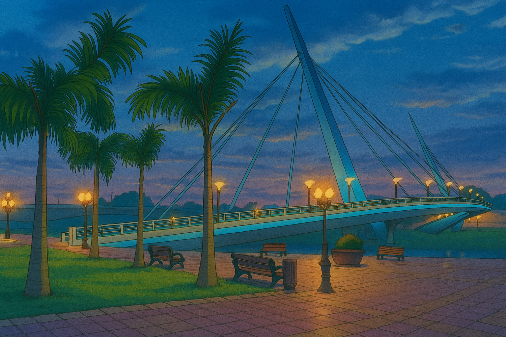

SUA PROXIMA VIAGEM
Conheça Rio Branco Acre
Rio Branco surge envolta pelo serpenteante Rio Acre, revelando uma cidade que nasce da natureza e cresce com cultura e história.Capital da Amazônia Ocidental, encanta por suas paisagens urbanas entrelaçadas à floresta e ao modo de viver amazônico, rica, vibrante e acolhedora.
PARA OS AMANTES DE HISTORIA
Descubra 4 destinos que são pontos historicos na capital de acreana
Rio Branco, a capital acreana, é uma cidade que preserva sua rica história enquanto busca se modernizar. Ao percorrer suas ruas e praças, é possível reviver momentos marcantes da história do Acre, desde a época da Revolução Acreana até o crescimento da cidade como um polo cultural da região Norte. Entre os destinos históricos mais importantes, destacam-se locais que guardam a memória da luta pela independência do Acre e a formação da identidade local. A cidade oferece uma arquitetura que mistura o antigo e o novo, com edifícios históricos contrastando com construções mais recentes. Conhecer esses pontos é entender um pouco mais sobre a resistência e a evolução do povo acreano.
1. Passarela Joaquim Falcão Macedo
A **Passarela Joaquim Falcão Macedo** é uma ponte pedonal e cicloviária inaugurada em outubro de 2006, com cerca de 200 m de extensão e 5,5 m de largura. Sustentada por dois pilares de 42 m de altura e cabos de estaiamento, conecta o Centro ao Segundo Distrito de Rio Branco. Esta obra se tornou um símbolo urbano moderno, valorizando o Rio Acre e reforçando a integração entre o espaço urbano e o paisagismo local. A passarela é utilizada por cerca de 20 mil pessoas por dia e é ideal para caminhadas ao fim da tarde, oferecendo uma vista privilegiada da cidade e do Rio Acre.
- Inauguração: Outubro de 2006
- Extensão: 200 m
- Largura: 5,5 m
- Altura dos pilares: 42 m
- Conecta: Centro e Segundo Distrito de Rio Branco
- Utilização diária: 20 mil pessoas
- Função: Ponte pedonal e cicloviária
2. Novo Mercado Velho
O **Novo Mercado Velho** (antigo Mercado Velho) foi edificado em 1929 como o primeiro prédio de alvenaria de Rio Branco. Foi revitalizado em 2002 e renomeado como "Novo Mercado Velho", tornando-se um polo cultural e comercial. O local abriga barracas de comidas típicas, artesanato, bares e cafés, com uma vista privilegiada da Passarela Joaquim Falcão Macedo e do pôr do sol. É um espaço de convivência, onde gerações se encontram para vivenciar a memória e os sabores da cultura acreana.
- Edificação: 1929
- Revitalização: 2002
- Função: Polo cultural e comercial
- Oferece: Comidas típicas, artesanato, bares e cafés
- Vista: Passarela Joaquim Falcão Macedo e pôr do sol
3. Praça da Revolução
A **Praça da Revolução** é um ponto central de Rio Branco, localizada em frente ao Palácio Rio Branco. A praça abriga o **Obelisco do Acre**, erguido em 1937 para homenagear os heróis da Revolução Acreana. Este espaço arborizado é muito frequentado por famílias e visitantes, que também podem saborear o tradicional tacacá nas barracas da praça. A Praça da Revolução representa memória e orgulho para o povo acreano, sendo palco de manifestações históricas e culturais.
- Localização: Em frente ao Palácio Rio Branco
- Obelisco do Acre: Erguido em 1937
- Função: Homenagear os heróis da Revolução Acreana
- Popular entre: Famílias e visitantes
- Comida típica: Tacacá
4. Palácio Rio Branco
O **Palácio Rio Branco** é um marco histórico e político do Acre. Sua construção começou em 1929 e foi inaugurado em 1930, com um estilo que mistura o clássico e o Art Déco. Em 2008, o palácio foi transformado em museu, exibindo exposições sobre a Revolução Acreana, seringueiros, geoglifos e povos indígenas. O Palácio Rio Branco é um ponto cultural de visitação essencial para quem deseja conhecer mais sobre a história do Acre.
- Inauguração: 1930
- Estilo: Clássico e Art Déco
- Museu desde: 2008
- Exposições: Revolução Acreana, seringueiros, geoglifos e povos indígenas
- Fechado para reformas em 2025